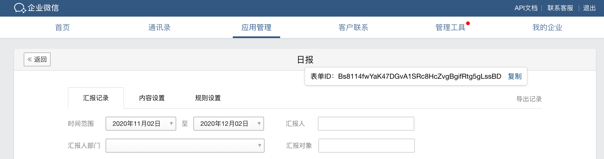

企业可通过本接口获取企业一段时间内企业微信“汇报应用”汇报记录编号，支持按汇报表单ID、申请人、部门等条件筛选。
一次拉取调用最多拉取100个汇报记录，可以通过多次拉取的方式来满足需求，但调用频率不可超过600次/分。
表单ID的获取方式：
管理后台--汇报应用--某个汇报的内容设置页--点击“汇报名称”，即可获取

请求方式:POST(HTTPS)
请求地址: https://qyapi.weixin.qq.com/cgi-bin/oa/journal/get_record_list?access_token=ACCESS_TOKEN
请求示例
{ "starttime": 1606230000, "endtime": 1606361304, "cursor": 0, "limit": 10, "filters": [ { "key": "creator", "value": "kele" }, { "key": "department", "value": "1" }, { "key": "template_id", "value": "3TmALk1ogfgKiQE3e3jRwnTUhMTh8vca1N8zUVNUx" } ] }点击复制
参数说明:
| 参数 | 必须 | 类型 | 说明 |
|---|---|---|---|
| access_token | 是 | string | 调用接口凭证 |
| starttime | 是 | uint32 | 开始时间 |
| endtime | 是 | uint32 | 结束时间,开始时间和结束时间间隔不能超过一个月 |
| cursor | 是 | uint32 | 游标首次请求传0，非首次请求携带上一次请求返回的next_cursor |
| limit | 是 | uint32 | 拉取条数 |
| filters | 否 | obj[] | 过滤条件 |
| filters.key | 否 | string | - 不多于256字节，creator指定汇报记录提单人；department指定提单人所在部门；template_id指定模板 |
| filters.value | 否 | string | - 不多于256字节 |
权限说明:
调用的应用需要满足如下的权限：
| 应用类型 | 权限要求 |
|---|---|
| 自建应用 | 需要配置到「汇报 - 可调用接口的应用」中 |
| 代开发应用 | 暂不支持 |
| 第三方应用 | 暂不支持 |
注： 从2023年12月1日0点起，不再支持通过系统应用secret调用接口，存量企业暂不受影响 查看详情
返回结果:
{ "errcode": 0, "errmsg": "ok", "journaluuid_list": [ "41eJejN57EJNzr8HrZfmKyCN7xwKw1qRxCZUxCVuo9fsWVMSKac6nk4q8rARTDaVNdg", "41eJejN57EJNzr8HrZfmKy7rmnZS5HGzpqUefyqCRhjdY9GWQQ6gcaNfaW6GPAdG5cg", "41eJejN57EJNzr8HrZfmKy2mkwnjMJPgE6UZfqnW5qMeZ1ag3qr1Amb98DbtVH89VJx", "41eJejN57EJNzr8HrZfmKyGXVp9cRByeSREpFtReMKpuAPYZYiCU4em8JKJNmCBYmxg", "41eJejN57EJNzr8HrZfmKy3NphvW9E8bYRTAMWcwo9oPhVEFv9cE2jUry8ZNsZYjuUx", "41eJejN57EJNzr8HrZfmKyDqJCnct6mYayM4tiEXGmoYmfUp1nDdNQSyxemtBHZa3ss", "41eJejN57EJNzr8HrZfmKyHr64ZdZa6JHYztDaS6hCmPMKtBN3YvD1FSFmauNU36Wxd", "41eJejN57EJNzr8HrZfmKyChHx58aDhGrvN7yKywBJs33yzUyqUF11sdBFcUBou2NQx", "41eJejN57EJNzr8HrZfmKy4w4AtPJyxQoGWmv7hnrZYwmdWVJQEhvgxT5mjEbC1xP43", "41eJejN57EJNzr8HrZfmKyFcSr1RLmAoBS7fnwiFcQJuVQfYZwcork67DZ36YFijmR2" ], "next_cursor": 34, "endflag": 0 }点击复制
参数说明:
| 参数 | 类型 | 说明 |
|---|---|---|
| errcode | int32 | 返回码 |
| errmsg | string | 错误码描述 |
| journaluuid_list | string[] | 汇报记录id列表 |
| next_cursor | uint32 | 下一次拉取游标 |
| endflag | uint32 | 0代表还有数据，1代表已无数据 |
错误说明：
| 错误码 | 说明 |
|---|---|
| 301065 | 无汇报应用数据拉取权限 |
| 301066 | 请求参数错误 |
| 301067 | 接口内部失败 |